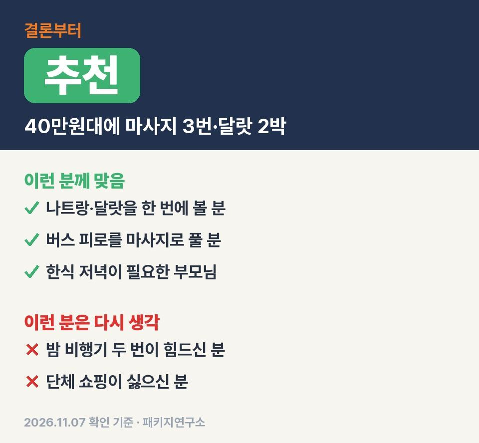
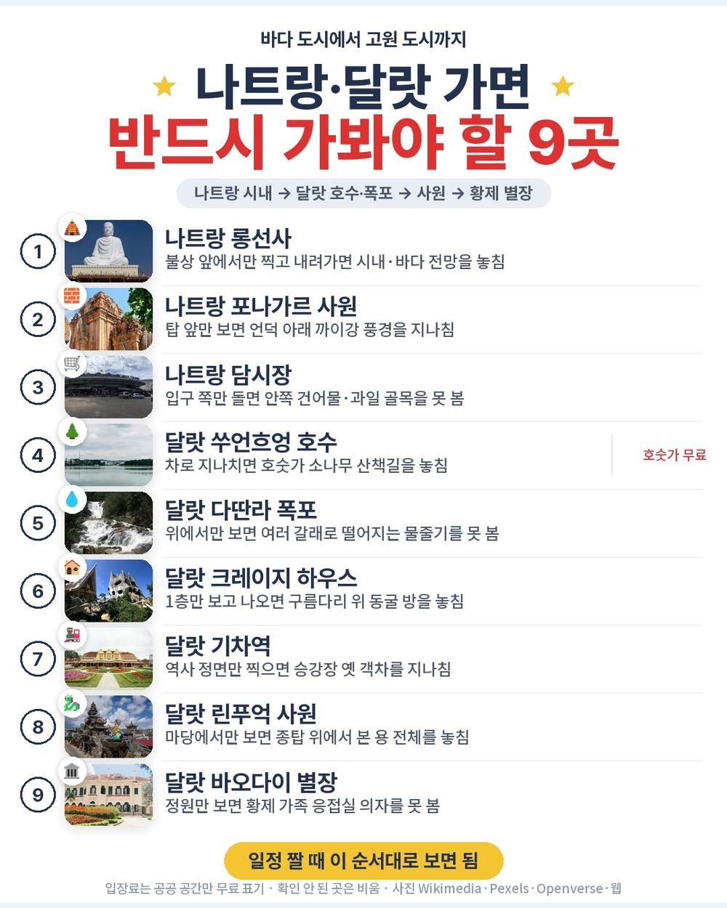
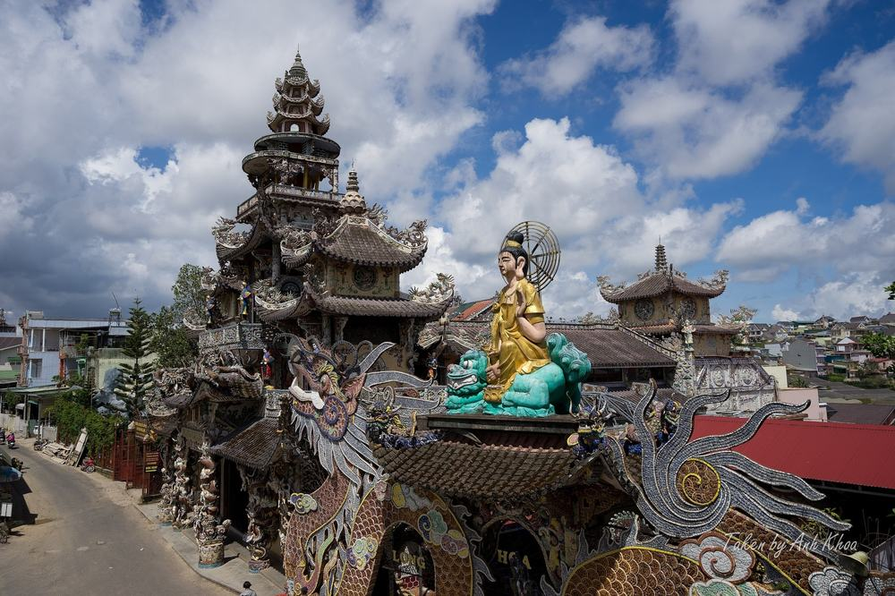
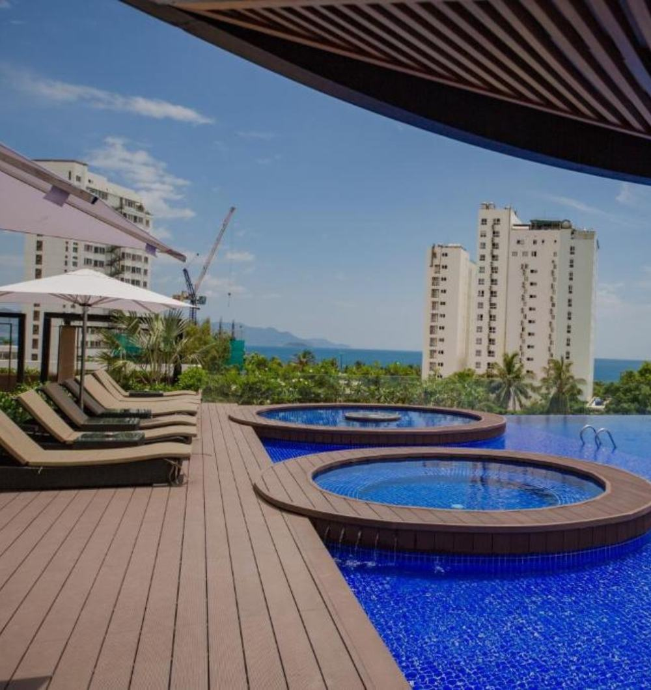
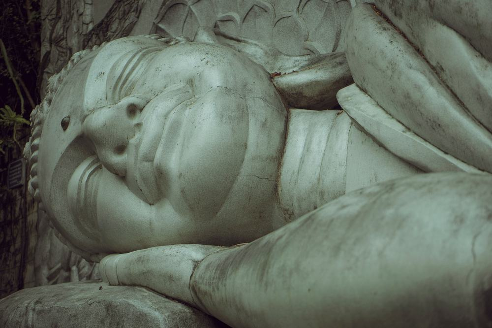

나트랑에서 달랏까지 고갯길 3시간 반을 넘는 날, 이 상품은 그날 일정에 마사지 60분을 하나씩 끼워 둠. 스톤·전신·발 세 번.
다녀온 후기가 아니라 일정표·포함·불포함·선택관광 원문을 한 칸씩 따져 본 정리임.
결론 — 추천. 직항 왕복, 나트랑 5성 1박과 달랏 4성 2박, 식사 9회, 마사지 3번, 명소 10곳이 44만 9천원 안에 있음. 다만 새벽 도착·새벽 출발 비행기가 힘드신 분은 맞지 않음.

오늘 기준 출발일별 요금 보기
https://naver.me/xD8doRLM

| 항목 | 내용 |
|---|---|
| 가격 | 1인 449,000원 (성인 · 12월 출발 기준) · 2인 898,000원 |
| 여행사 | 하나투어 |
| 항공 | 이스타항공 직항 (ZE561·ZE562) · 인천 20:50 → 깜란 00:55 / 깜란 01:55 → 인천 08:50 |
| 숙소 | 나트랑 퀸터 센트럴 나트랑(5성급) 1박 → 달랏 더 웨스턴 힐 호텔(4성급) 2박 · 예정 호텔, 어려우면 동급 |
| 일정 | 3박 5일 · 버스 · 한국어 가이드 · 식사 9회 · 단체 쇼핑 3회 · 가이드·기사 경비 1인 40달러 별도 |
▶ 내 출발일 오늘 기준 요금 확인 (제휴 링크 · 예약 시 수수료를 받으며 가격은 같습니다)
▶ 11월 7일 기준 나트랑 패키지 최저 39만 9천원부터 — 출발일별 값 한 화면에: 비교 페이지
| 번호 | 내용 | 한 줄 답 |
|---|---|---|
| 1 | 이 값에 들어 있는 것 | 마사지 3번 |
| 2 | 현장에서 더 낼 돈 | 2인 약 13만 2천원 |
| 3 | 일정과 체력 | 버스 약 11시간 40분 |
| 4 | 자유여행으로 짜면 | 마사지만 90달러 |
| 5 | 맞는 분 · 안 맞는 분 | 3 대 3 |
마사지 세 번이 이동이 긴 날에 붙어 있어서 값보다 일정 짠 방식이 이 상품의 장점임.

- 항공: 이스타항공 인천–깜란 직항 왕복, 유류할증료·공항세 포함
- 숙소: 나트랑 시내 5성급 1박 + 달랏 4성급 2박(같은 호텔 연박)
- 식사: 9회, 그중 무제한 특식 3회(삼겹살·샤브샤브·분짜 반쎄오), 저녁 세 번은 한식
- 마사지: 스톤 60분(2일차) · 전신 60분(3일차) · 발 60분(4일차)
- 관광: 롱선사 · 포나가르 사원 · 담시장 · 쑤언흐엉 호수 · 다딴라 폭포 · 크레이지 하우스 · 달랏 기차역 · 린푸옥 사원 · 랑비엔 고원 · 바오다이 별장
- 그 밖: 루미 스카이바 맥주 1잔, 깜란 공항 하나투어 라운지 미팅, 한국어 가이드, 여행자보험

첫날 5성급은 새벽 1시 넘어 체크인하는 밤이라 짧음. 대신 달랏은 같은 호텔에서 두 밤 내리 자서 짐을 한 번만 풂.
반드시 더 내는 돈은 경비 40달러와 마사지 팁이고 선택관광을 몇 개 고르느냐가 예산을 가름.
| 항목 | 금액 | 필수/선택 | 비고 |
|---|---|---|---|
| 가이드·기사 경비 | 80달러 (약 10만 8천원) | 필수 | 1인 40달러 |
| 마사지 매너팁 | 18달러 (약 2만 4천원) | 원문상 별도 지급 | 회당 3달러 × 3번 × 2명 |
| 랑비엔 지프차 | 80달러 | 선택 | 1인 40달러, 안 타면 아래에서 자유시간 |
| 다딴라 레일바이크 | 60달러 | 선택 | 1인 30달러 |
| 달랏 기차 탑승 | 40달러 | 선택 | 1인 20달러 |
| 기내식 | 사서 먹음 | 해당 시 | 저가항공 유료 |
| 합계 (2인 필수분) | 98달러 (약 13만 2천원) | 1달러 약 1,348원 · 2026-11-06 환율 |
- 2인 총액(필수분까지): 약 103만원, 1인 약 51만 5천원
- 선택관광 세 가지를 다 하면 2인 180달러가 더 붙음
- 달러는 작은 지폐로, 팁 줄 때 편함
버스가 긴 날은 2일차와 4일차인데 둘 다 마사지 한 시간이 같은 날 들어 있음.
| 일차 | 가는 곳 | 버스 | 걷기 | 점심 · 저녁 |
|---|---|---|---|---|
| DAY 1 | 인천 20:50 → 깜란 00:55 → 나트랑 호텔 | 약 40분 | 적음 | 없음 · 없음 |
| DAY 2 | 롱선사 → 포나가르 사원 → 담시장 → 스톤 마사지 → 달랏 → 쑤언흐엉 호수 | 약 4시간 30분 | 보통 | 현지식 · 한식 |
| DAY 3 | 다딴라 폭포 → 크레이지 하우스 → 전신 마사지 → 달랏 기차역 → 린푸옥 사원 | 약 1시간 30분 | 보통 | 현지식 · 한식 |
| DAY 4 | 랑비엔 고원 → 바오다이 별장 → 나트랑 → 발 마사지 → 루미 스카이바 → 공항 | 약 5시간 | 보통 | 현지식 · 한식 |
- 버스: 나흘 합쳐 약 11시간 40분, 고갯길 3시간 반이 두 번
- 계단: 롱선사 좌불상까지 152계단, 크레이지 하우스는 좁은 구름다리
- 날씨: 달랏은 연평균 18도라 아침저녁엔 얇은 패딩이 필요함

굽은 산길이라 멀미약은 출발 전에 챙겨 두는 게 편함. 무릎이 불편하시면 롱선사 계단 앞에서 가이드에게 미리 말해 두시면 됨.
같은 목적지 다른 여행사 패키지, 쇼핑·선택관광·가이드 경비까지 비교
https://pkg-lab.com/dest/NHA/m/2026-12/?utm_source=ghpages&utm_medium=post&utm_campaign=daily
항공값을 오늘 조회하지 못해 합계는 못 냈고 이 상품 선택관광 값으로만 따져도 마사지 세 번이 90달러어치임.
| 항목 | 금액 | 근거 |
|---|---|---|
| 인천–깜란 왕복 항공 | 확인 못 함 | 2026-11-07 마이리얼트립 조회 실패 — 숫자를 지어내지 않음 |
| 호텔 3박 | 120,000원 | 나트랑 1박 + 달랏 2박, 2인 1실 1인분 (추정) |
| 식사 (점심·저녁 6회) | 60,000원 | 현지 식당 (추정) |
| 마사지 60분 3번 | 90달러 (약 12만 1천원) | 이 상품 선택관광 「베트남 전통 마사지 60분」 30달러 × 3 |
| 나트랑↔달랏 이동 · 공항 이동 | 50,000원 | 버스·택시 왕복 1인분 (추정) |
| 여행자보험 · 유심 | 15,000원 | 5일 기준 (추정) |
| 가이드 | — | 자유여행은 없음 |
| 합계 (항공 빼고) | 약 366,000원 |
- 항공 빼고 직접 짜면: 1인 약 36만 6천원
- 패키지: 항공까지 넣고 44만 9천원
- 차이: 항공권이 7만 3천원 넘으면 패키지 쪽이 덜 듦
달랏 고갯길을 직접 오가려면 버스표·택시를 따로 잡아야 해서 처음 가는 달랏이면 패키지 동선이 편함.
걸리는 건 비행기 시간과 쇼핑 쪽이고 값에 든 일정은 두 도시 대표 명소를 빠짐없이 돎.
| 맞는 분 | 안 맞는 분 |
|---|---|
| 나트랑·달랏을 한 번에 보고 싶은 분 | 새벽 도착·새벽 출발 비행기가 힘드신 분 |
| 버스 피로를 마사지로 풀고 싶은 분 | 단체 쇼핑 일정이 아예 싫으신 분 |
| 한식 저녁이 꼭 필요한 부모님 | 랑비엔 정상까지 꼭 가야 하는 분(지프차 별도) |
이 상품으로 다녀온 분들 후기를 모아 보면 달랏의 선선한 날씨, 숲길을 내려가는 레일바이크, 든든한 한식 구성을 좋았다고 꼽는 쪽이 많음. 아쉬운 쪽은 나트랑–달랏 버스가 길다는 것과 침향 매장에서 사라는 권유가 부담됐다는 것. 매장은 둘러보기만 해도 되고 긴 버스 날엔 마사지가 붙어 있음.
Q. 나트랑 패키지 쇼핑은 몇 번 가나요?
A. 이 상품은 단체 쇼핑 3회. 침향·노니·커피 같은 매장에 회당 50분~1시간 들름. 사는 건 자유임.
Q. 나트랑 패키지 가격은 이 상품이 얼마인가요?
A. 12월 출발 기준 1인 44만 9천원, 2인 89만 8천원. 출발일마다 값이 달라서 날짜별로 확인해야 함.
Q. 나트랑 패키지 노옵션인가요?
A. 아님. 랑비엔 지프차 40달러, 레일바이크 30달러, 기차 탑승 20달러 같은 선택관광이 있음. 안 하면 근처에서 자유시간.
40만원대에 바다 도시 나트랑과 고원 도시 달랏을 다 돌고 사흘 내리 마사지까지 받는 구성.
비행기가 양쪽 다 새벽 시간대라 그 점만 괜찮으면 부모님 모시고 가기에 무난한 일정임.
출발일에 따라 값이 달라서 가시려는 날짜 요금부터 확인하시면 됨.
오늘 기준 출발일별 요금 보기
https://naver.me/xD8doRLM
이 글에는 네이버 제휴 링크가 포함되어 있으며, 링크를 통해 예약하시면 일정 수수료를 받습니다. 가격은 동일합니다. 가격과 구성은 2026년 11월 7일 확인 기준이며 출발일에 따라 달라질 수 있습니다.
▶ 이 상품, 영상으로 보기 (유튜브)
▶ 나트랑 패키지 오늘 값 나란히 비교
▶ 같은 목적지 다른 여행사 패키지, 쇼핑·선택관광·가이드 경비까지 비교: pkg-lab.com
.jpg){kind=link}